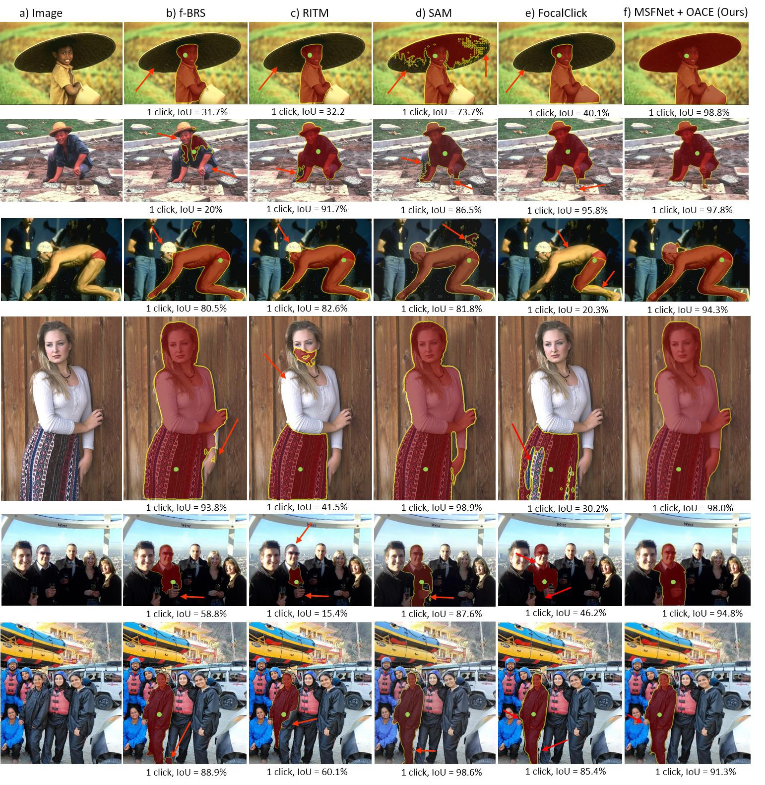
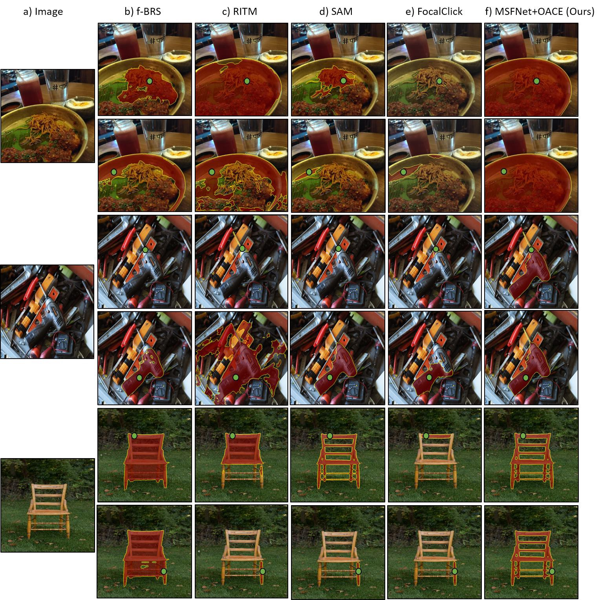
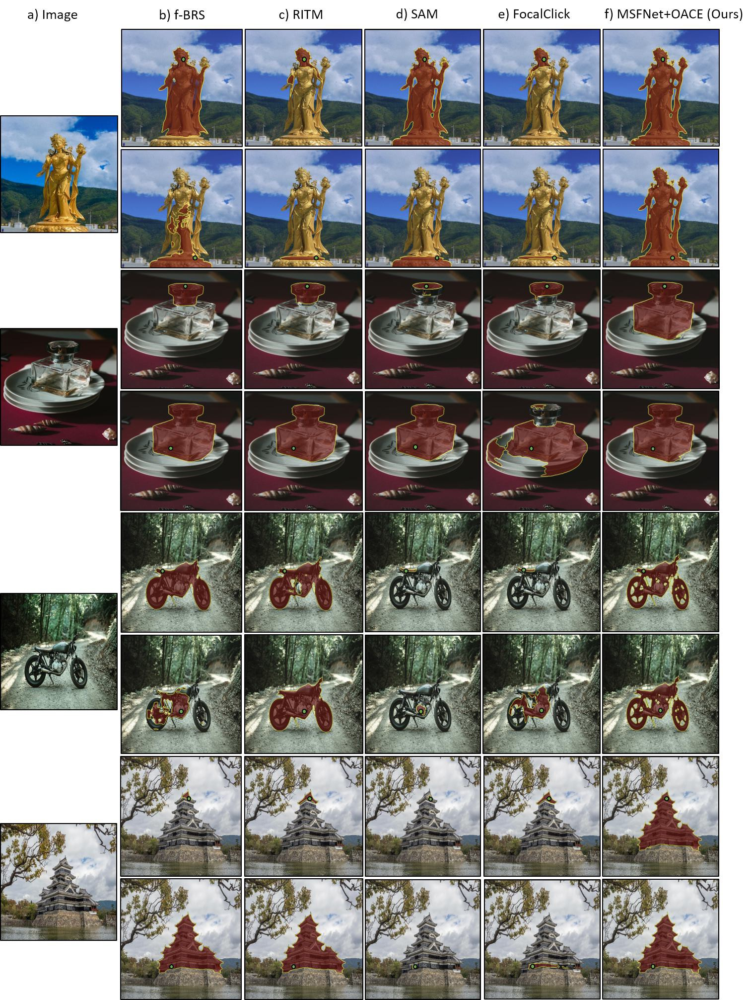

Results and Comparisons
Qualitative comparison of single-click segmentation accuracy of different interactive segmentation methods. The green dot on each image denotes the user click location. Red arrows point to the erroneous regions. Note that proposed approach significantly improve the single click selection accuracy of objects in an image.
Qualitative comparison of different interactive segmentation methods in terms of segmentation output for different user click locations. The green dot on each image denotes the user click location. Note that conventional interactive segmentation methods have high variance in outputs when the click location is changed. The proposed method is robust towards different click locations and produce consistent outputs.
 